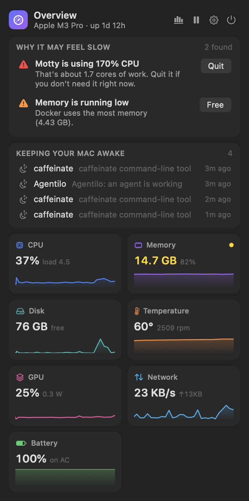

Health check
The problem, the culprit and the fix.
Not just numbers: what they mean.
- Names the app hogging the CPU, eating memory or keeping the disk busy, with Quit, Free memory or Analyze storage one click away
- Spots thermal throttling, heavy swap, a nearly full disk and a low battery
- Lists the apps keeping your Mac awake
- Every widget as a card with its last minute; click one for the details, Esc to come back
- ⌘1–⌘7 jump between widgets, ⌘0 back to the overview
